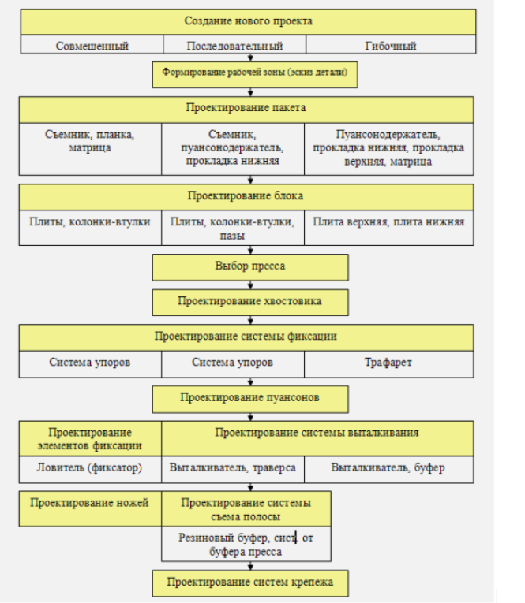

На этапе формирования проекта конструкции штампа пользователь должен указать основные характеристики конструкции проектируемого штампа. Проект конструкции отображается на экране в виде "дерева проекта" и отражает номенклатурный состав и компоновку составляющих элементов конструкции штампа. В качестве составляющих элементов конструкции могут выступать сборочные единицы (блок, пакет и т.д.), технологические системы (система крепежа, система фиксации заготовки и т.д.), детали штампов. Проект конструкции штампа формируется конструктором путем выбора составляющих элементов конструкции из вариантов, предлагаемых системой. Пример проектирования разделительного штампа последовательного действия.
Примерный порядок проектирования штампов различных типов
Список литературы:
Рудман Л.И. — Справочник конструктора штампов. Листовая штамповка, 1988.
А.В. Рыбаков, С.А. Евдокимов, А.А. Краснов — Создание системы автоматизированной поддержки информационных решений при проектировании технологической оснастки, 2013
Иванов И.И., Петров П.П. — Книга / справочник / статья «Название литературы»
Дата выполнения: 21.03.2022